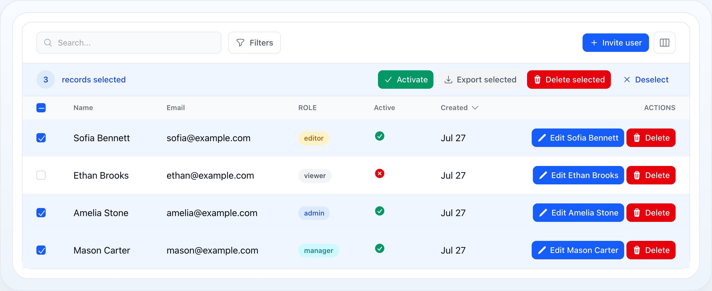

Table
Table Actions
Use actions for record-level operations, bulk operations, and toolbar commands.

On this page
- Action Types
- Row Actions
- Execute PHP logic
- Open a URL
- Icon-only actions
- Bulk Actions
- Selecting Beyond the Page
- Bulk Actions Over Large Selections
- Sorting on a Phone
- Header Actions
- Confirmation Modals
- Form Actions
- Refusing a stale record — optimisticLock()
- Visibility, State, and Permissions
- Action Groups
- Related Docs
Use actions for record-level operations, bulk operations, and toolbar commands.
Action Types
| Type | Use for |
|---|---|
| Row actions | One record at a time |
| Bulk actions | The currently selected records |
| Header actions | Global table commands |
| Action groups | Compact dropdowns for multiple row actions |
Row Actions
use NyonCode\WireCore\Actions\Action;use NyonCode\WireCore\Actions\DeleteAction; ->actions([ Action::make('edit') ->label('Edit') ->icon('pencil') ->url(fn (User $record) => route('users.edit', $record)), DeleteAction::make(),])Use a row action when the user is working with a single record and the intent is obvious from the row context.
Execute PHP logic
Action::make('activate') ->label('Activate') ->color('success') ->action(function (User $record) { $record->update(['active' => true]); })Open a URL
Action::make('view') ->icon('eye') ->url(fn (User $record) => route('users.show', $record), openInNewTab: true)Icon-only actions
Action::make('edit') ->icon('pencil') ->iconButton() ->tooltip('Edit')Bulk Actions
Bulk actions appear when the table has selectable rows.
use NyonCode\WireCore\Actions\BulkAction;use NyonCode\WireCore\Actions\DeleteBulkAction; ->bulkActions([ BulkAction::make('export') ->label('Export selected') ->icon('download') ->action(fn (array $records) => $this->exportUsers($records)), DeleteBulkAction::make(),])Use bulk actions for destructive or repetitive operations that should not be repeated row by row.
Selecting Beyond the Page
A selection has two shapes, and the second is what makes a bulk action over a whole filtered set possible at all:
- keys — an explicit set of record keys, deliberately unaffected by filters and sort. Selecting a page adds to it, so paging never discards work.
- all matching — everything the current filter matches, stored as a mode rather than a list. Unticking one row out of 128 000 stores one exclusion, not 127 999 keys, and no list of the whole result set ever reaches the browser.
The selection bar always shows which of the two is active and offers the way across:
[3] records selected [Export] [Delete] [×]3 selected. Select all 1 284Once the whole filtered set is selected, the same line offers Only this page back.
A filter or search change drops "all matching" back to an explicit selection. "Everything" is defined by the filter that was on screen; narrowing it while the selection stands would silently redefine what the next bulk action touches. Sorting and paging leave it alone — neither changes the set.
Bulk Actions Over Large Selections
An action callback receives a Collection, which is a problem when the selection
is a query over six figures of rows. Two things follow.
Table::bulkMaxRecords() caps what one action may load (default 1 000). Over the
cap the action refuses and says so, rather than dying halfway through:
$table->bulkMaxRecords(5000) // raise it$table->bulkMaxRecords(null) // lift it entirely — see belowFor an action that must handle any size, walk the selection instead of receiving
it. eachSelectedRecord() chunks through the query and never holds more than one
chunk in memory:
BulkAction::make('archive') ->action(fn () => $this->eachSelectedRecord( fn (Invoice $invoice) => $invoice->archive(), chunk: 500, ))selectedRecordsQuery() hands you the same selection as a query builder, for a
mass update or an export that streams.
Sorting on a Phone
The stacked card layout hides the header row, and with it every sort button. A
sort control therefore renders in the toolbar below the stacking breakpoint,
listing the sortable columns and naming the active one on its trigger. It opens
as a bottom sheet on small screens. Nothing to configure: it appears whenever
stackedOnMobile() meets at least one sortable column.
Header Actions
Header actions live above the table and are not tied to a specific record.
use NyonCode\WireCore\Actions\HeaderAction; ->headerActions([ HeaderAction::make('create') ->label('New user') ->icon('plus') ->url(route('users.create')), HeaderAction::make('export') ->label('Export all') ->icon('download') ->action(fn () => $this->exportAll()),])Confirmation Modals
Require confirmation for destructive or high-impact actions.
Action::make('delete') ->color('danger') ->requiresConfirmation() ->modalHeading('Delete user') ->modalDescription('This action cannot be undone.') ->action(fn (User $record) => $record->delete())Form Actions
Attach a Wire Form schema to an action when the user must provide input before execution.
use NyonCode\WireForms\Components\Select;use NyonCode\WireForms\Components\TextInput; Action::make('edit') ->form([ TextInput::make('name')->required(), Select::make('role') ->options([ 'admin' => 'Admin', 'editor' => 'Editor', 'viewer' => 'Viewer', ]) ->required(), ]) ->fillFormUsing(fn (User $record) => [ 'name' => $record->name, 'role' => $record->role, ]) ->action(function (User $record, array $data) { $record->update($data); })For the full form API, see Forms Overview and Form Fields.
Refusing a stale record — optimisticLock()
A modal's window is a long one: it opens, the user reads the record, types, maybe
walks away, and submits some time later. optimisticLock() refuses the action if
the record changed in the meantime.
Action::make('approve') ->optimisticLock() ->form(fn () => [/* … */]) ->action(fn (Invoice $record, array $data) => $record->approve($data))The baseline is captured when the modal opens and compared on submit, using the
same version convention (RecordVersion, the model's updated_at) an
inline cell edit always uses — one
answer to "has this row moved", not two that can drift. When it refuses, the
modal closes and a warning is raised; leaving the form up would put the user back
in front of values that are no longer there, with no way to tell.
It is off by default, because a moved record only invalidates an action that decided something from what it read. Approving an invoice whose total changed underneath is a lost update; deleting a record someone else renamed is not. Turning it on everywhere would buy a new way to fail and nothing else.
Visibility, State, and Permissions
All action types support conditional visibility and authorization.
Action::make('approve') ->visible(fn (User $record) => $record->status === 'pending') ->disabled(fn (User $record) => $record->is_locked) ->permission('approve-users')Keep the UI honest: hide actions users should not see, disable actions they can see but cannot use yet.
Action Groups
Use action groups when you have too many row actions for a single row.
use NyonCode\WireCore\Actions\ActionGroup; ->actions([ ActionGroup::make([ Action::make('view')->icon('eye')->url(fn (User $record) => route('users.show', $record)), Action::make('edit')->icon('pencil')->url(fn (User $record) => route('users.edit', $record)), Action::divider(), DeleteAction::make(), ])->tooltip('More actions'),])